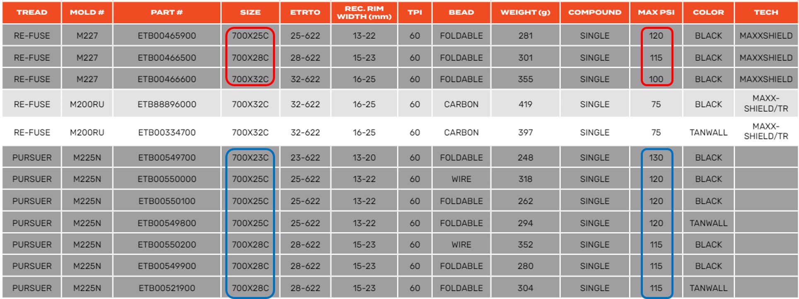
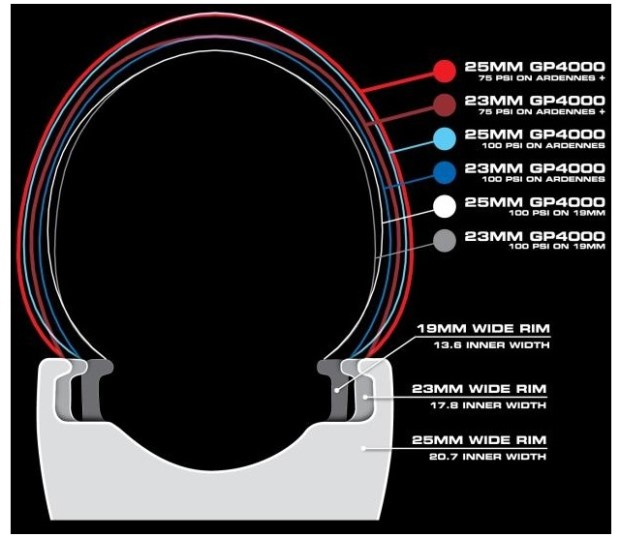
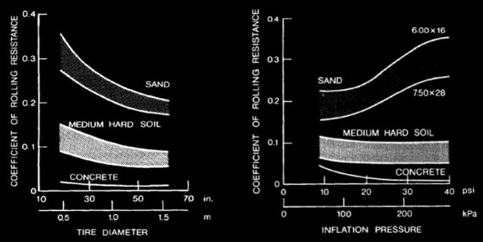
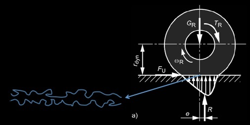
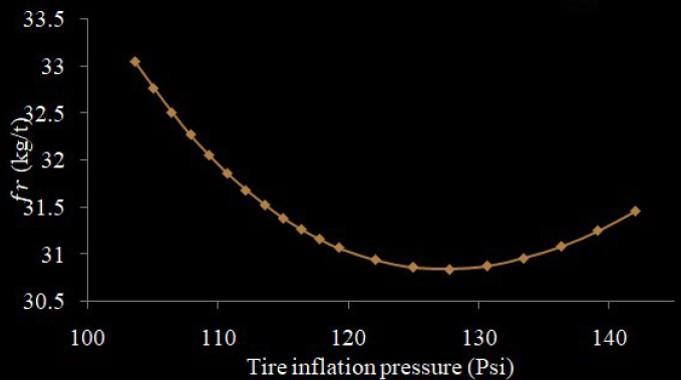
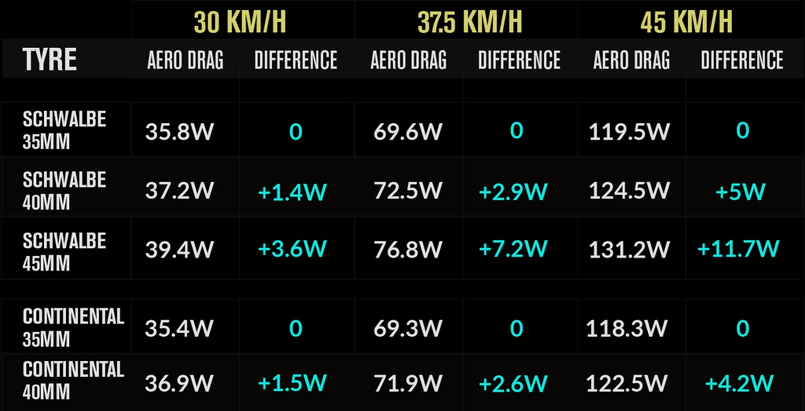

胎壓到底要高還低 胎壓低真的會比較快嗎
大概在 2016 年輪胎寬度還在 20 c 左右，2019 年大概到了 23~25 c，近幾年則是到了 28c 甚至 30 c，當然不外乎寬胎的胎壓較低騎起來比較舒服，也有人說寬胎的胎壓低滾阻也比較低，那我們就來看一下胎寬、胎壓跟滾阻三者的關係。先來看不同寬度的外胎可以支援的最高胎壓，從 maxxis 的官網可以看到 外胎越低，可支援的最高胎壓就越高，所以寬胎就是一定要低胎壓，當然大家的認知就是同一條輪胎，胎壓低那滾阻就會高，而現在是不同條輪胎，基準點也就不同，
|  |
|---|
| 圖一：胎寬與最高胎壓的關係[1] |
我們先來看一下為什麼外胎越寬胎壓就要越低，當外胎越寬，總面積也就越大，在打氣時氣體就會對外胎施力並垂直胎壁，此時外胎或是內胎就會被撐起來，那麼可以用國中學過的壓力公式，來算算看外胎的受力，如果都是同一家廠商做的，我們可以假設能承受的力是一樣的，所以相同胎壓下 外胎越寬受力就越大，所以最大胎壓就會越小，這個是在討論外胎整體的受力，如果是在路上壓到小石頭，即便是都打到最高胎壓，那麼寬胎感受到的震動還是比較小，因為對於一個小點的力寬胎還是比較小的，所以對於寬胎來說 舒適度是一定比較高的，
|  |
|---|
| 圖二：胎寬與胎壓的關係 |
那麼我們來看一下滾阻分別與胎壓和胎寬的關係，雖然這個是汽車輪胎的研究，不過我們也可以從這邊來大概看一下，當然相較於汽車，自行車輪胎就是非常窄跟高壓，在一般的公路條件下胎寬的變化很小，而如果你是有騎 off-road 的話就一定是寬胎，因為寬胎通常還會有其他的紋路增加抓地力，然後胎壓通常是很低的，胎壓太高反而會降低抓地力使得滾阻升高，當然抓地力跟滾阻是兩回事，晚點會提到，而滾阻其實也有公式可以計算，也跟速度有關 只是自行車通常不會太快，所以可以當作定值來看就好，公式如何來的可以去看看這本書，主要就是跟胎壓和負重有關，當然要打多少胎壓也是跟胎寬有關。
|  |
|---|
| 圖三：胎寬與胎壓與滾阻的關係[2] |
那麼我們來看一下滾阻是怎麼產生的，首先要先搞清楚滾阻跟抓地力是兩回事，在大家使用的情況下抓地力跟滾阻，都是胎壓越低就會越大，但是在不同的條件就會有差異了，例如在林道或是一些 off-road 的泥濘路段，胎壓過高會讓滾阻變高而抓地力降低，這也是前面看到在沙地上胎壓越高滾阻越大，所以我們就來看一下滾阻有哪些，第一個就是外胎的形變，在柏油路上，胎壓越低外胎的形變就越大 所以滾阻就越高，再來是看沙地時為什麼胎壓越高滾阻越大，因為胎壓高整體就會硬，但是在沙地上輪子在轉動時沙子就會噴走，這時就表示輪胎在空轉，也就是輪胎與路面有相對移動，這時的阻力來源就是動摩擦力，這就是高胎壓在沙地滾阻高的原因，而高胎壓在崎嶇不平的路面也會有高滾阻。
|  |
|---|
| 圖四：輪胎滾阻成因[6] |
主要是因為高胎壓在壓到凸起物時較容易跳起來，如果有跳起來輪胎就會離開路面，而輪胎的轉動跟騎乘的速度有一個關係存在，當落地時的轉速高於該關係，這時也會有滾阻產生 而且還非常大，所以就去年的 Paris-Roubaix 就有車隊使用，胎壓即時調節系統來改變胎壓，不過今年到沒看到，可能是實戰時沒空去變吧，當然也不是輪胎硬壓到突起物就一定會彈起，其實很多時候輪子還是貼著凸起物過去，只要你不是騎乘在石板路或是礫石路，大多的情況就只是震動而以，這也是為什麼在前面的表格顯示，相同胎寬下 胎壓越高滾阻也是越低，
表二：不同框胎比調整胎壓後的滾阻[3]
| 框寬 | 18C | 22C | 26C |
|---|---|---|---|
| 框胎寬比 | 72% | 88% | 104% |
| 127, 120, 113 psi W | 8.3 | 8.6 | 8.3 |
| 106, 100, 94 psi W | 8.9 | 9.1 | 9.0 |
| 85, 80, 75 psi W | 9.9 | 10.1 | 10.0 |
| 64, 60, 57 psi W | 11.5 | 11.7 | 11.5 |
當然身為一個專業的理論頻道，我們就來看看是否能找到在某胎壓下的最低滾阻，也剛好有篇論文在探討類似的事情，這篇論文是從採礦的角度去最佳化錢的使用，也就是根據油價和載運量去計算出，每趟在多少的礦量可以有最少的花費，當然直覺上來講直接載到最大限重就好了，但實際上還要考慮路面狀況 使用的胎寬與胎壓，這個情況還有油價跟行駛的距離去做建模，建模的過程我就不多說了，有興趣的自己去看論文，就論文結果來看，確實存在一個最低滾阻的胎壓，有空我也來去推導一下自行車的模型，然後在放進我的路段計算機裡面。
|  |
|---|
| 圖五：同胎寬下滾阻最低的胎壓[4] |
最後來看一下胎寬與風阻的關係，也有人去做了實驗然後放在網站上，實驗是用 Gravel bike 做然後只換外胎，其他的裝備都不動下去做測試，從文章看起來應該是只有全車進風洞而已，結果也不出意料的寬胎風阻比較大，不過因為在相同框體下有一個適用的外胎寬度，所以結論是在適用外胎寬度下，胎寬越寬風阻也就越大，所以一般都只有告訴你寬胎與窄胎，在相同的胎壓下 寬胎的滾阻會比較低，但是整體看下來，重量比較重、風阻也比較大，換到的大概只有比較舒適而已吧，當然舒適度也是非常重要的，畢竟生活可能不幸福 但是要過得很舒服，
|  |
|---|
| 圖六：胎寬與風阻的關係[5] |
所以從基本的壓強公式可以知道，如果是同一個製程的外胎，胎寬越寬可以承受的最大胎壓就越低，所以在討論胎壓 胎寬與滾阻三個便因時，如果關心的是滾阻，那就要看在相同滾阻下，胎寬與胎壓的關係。在這條件下，胎寬越寬胎壓就越低、反之越高，滾阻的來源是主要是外胎的形變，而抓地力不足造成輪胎空轉也是其一，但一般高胎壓的情況輪子也很少有空轉，只是震動比較明顯容易造成車手不舒適，另外寬胎也還有稍高的風阻與重量，所以像一些距離就短 或是速度較慢的賽事，就可以選擇窄胎 例如場地賽 繞圈賽，個人計時賽跟純爬坡賽，而一般的公路賽因為地形變化大，而且中途也可能會有下坡 路面品質不一，就可以選比較寬的輪胎。
參考資料
[1]. https://www.cst.com.tw/upload/ecatalog/2404250957590000002.pdf
[2]. Tyre modelling for rolling resistance
[3]. https://www.biketo.com/product/47589.html?all=1
[4]. ROLLING RESISTANCE ANALYSIS IN OPEN PIT MINING HAULING
[5]. https://www.swissside.com/en-ch/blogs/aero-tech-tips/gravel-report
[6] https://zhuanlan.zhihu.com/p/131597440